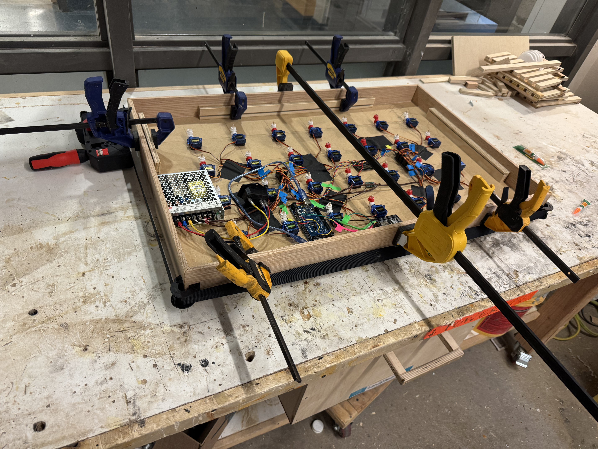

Vector Motion
Kinetic vector field

Overview
Vector Motion is a kinetic sculpture that enlivens mathematical vector fields through programmed motion. Inspired by early morning reflections shifting across a wall of windows, the 2x3 ft wall-mounted piece explores directional flow through servo-controlled movement patterns.
Process
The project evolved through three iterations, each negotiating size constraints, servo specifications, and microcontroller capabilities. Early prototypes revealed challenges with servo angle limitations and power requirements, ultimately working within the constraints of cost-accessible 180-degree servos. Sequential testing explored different control architectures and mounting solutions, with refinements focusing on synchronization, mechanical stability, and visual rhythm. The MDF panel with oak edge detailing provided structural integrity while maintaining clean aesthetic lines for the servo-driven arrows.

Outcome
The final installation comprises 28 servos, two servo driver boards, and one Arduino Uno orchestrating four distinct movement patterns: wave motion flowing through the piece, synchronized sweeping where all arrows move in unison, horizontal cascades, and randomized sequences. Exhibited twice, the piece entranced viewers who stopped to watch extended cycles, with one observer noting its ocean-like quality and calming presence. Vector Motion bridges physical computing and kinetic art, demonstrating how programmed motion can transform mechanical components into meditative visual experiences that capture the ephemeral beauty of reflected light.